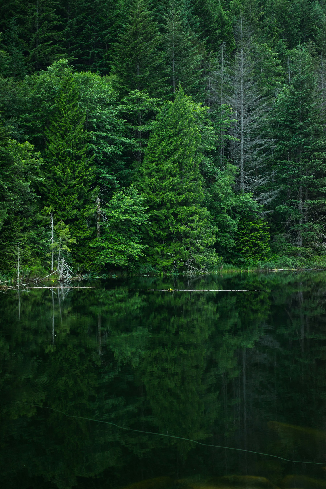

Remember to blink
We often blink less when concentrating on screens. Blink fully and gently to help spread tears across the eye surface.
PAUSE. BREATHE. LOOK AWAY.
Let your eyes wander.
Your work will be here when you get back.

YOUR NEXT MOMENT OF STILLNESS
Give your eyes a moment to rest.
SMALL BREAKS, OVER TIME
See the focus and break time recorded while your timer is running. Paused time is not counted.
No time recorded yet. Start your rhythm above to begin.
| Date | Screen / focus | Breaks |
|---|
This is a timer-based estimate, not your device’s total screen time. It cannot detect whether you are looking at the screen or taking a real break. Pause when you step away. Long inactive gaps pause tracking. Only one tab can run the timer at once; closing or reloading the page stops it.
History stays in this browser on this device; it is not uploaded. Clearing site data removes it. Weeks start on Monday; dates use your local time.
A GENTLE REMINDER TO LOOK AWAY
Pause and Break helps students and people working at screens make room for regular eye breaks. Long stretches of close-up work can mean less blinking and uncomfortable, dry eyes. A simple reminder can help you build a more comfortable rhythm.
Pause your screen use, reading, or other close-up work.
Look at a real object in the distance—about 6 metres away.
Keep looking away, relax your gaze, and blink gently.
Looking into the distance gives your eyes a break from close focus. Regular pauses and blinking may help ease screen-related discomfort. The nature scene is your cue to look away; watching it is still screen time.
We often blink less when concentrating on screens. Blink fully and gently to help spread tears across the eye surface.
Reduce glare and keep direct fan or air-conditioning airflow away from your eyes. A humidifier may help in dry rooms.
Breaks support comfortable habits; they do not treat or cure dry eye or meibomian gland dysfunction. Follow your eye-care professional’s advice, especially for persistent or severe symptoms.
Learn more: American Academy of Ophthalmology: screen breaks · National Eye Institute: dry eye
Photos: Bryce Evans (forest), James Park (ocean), and Shutter Verse (rain), under the Unsplash License.
Recordings: Common Blackbird song — Diana Tudor (CC BY 4.0); Ocean waves — Luftrum (CC BY 3.0); Sound of rain — Effib (CC BY-SA 3.0). Adapted from Wikimedia Commons recordings: volume normalized, peaks limited, and brief edge fades added for looping. Each adaptation retains its original license. Photos and sound are paired by setting, not recorded together. Meadow photo: Hero Ding; stream photo: Eric Muhr (Unsplash License). Meadow uses the same Diana Tudor birdsong as Forest. Stream sound: Forest lawn creek — Dsw4, public domain; excerpted and volume adjusted.